“The closest to time travel that you’ll get”
Zephyr has been a fixture in downtown Abingdon, VA for over 25 years with four floors of treasures.
Rugs, furniture, glassware, jewelry, vintage signs and vinyl records on Main Street in historic Abingdon.
Plan your visitWelcome to Zephyr Antiques
Zephyr Antiques fills four floors on West Main Street, and it's a place to wander. Every aisle holds something different: hand-knotted rugs and lamps in one corner, display cases of costume jewelry and fine glass in the next, then a wall of old advertising signs, baskets, books and kitchenware. Our stock changes all the time, so there's always something new to find.
Whether you're furnishing a home, hunting for one particular piece of a collection, or just like poking around, come on in and take your time.
Furniture & rugs
Dressers, secretaries, cabinets and side tables, plus a big selection of Oriental and hooked rugs.
Glass & china
Depression glass, crystal, pottery and dinnerware in lit display cases.
Jewelry & smalls
Vintage costume jewelry, figurines, frames and the little things that make a shelf.
Signs & collectibles
Advertising signs, tins, baskets, books and Americana.
Vinyl records
Crates of vinyl to flip through, from classic rock and country to jazz and oddities.
Take a stroll
Walk through the shop
Step inside from Main Street and wander the main floor, past the cabinets, display cases and rugs, toward the stairs to the next level. It's only a small taste of what's waiting across all four floors.
Plan your visitA look inside
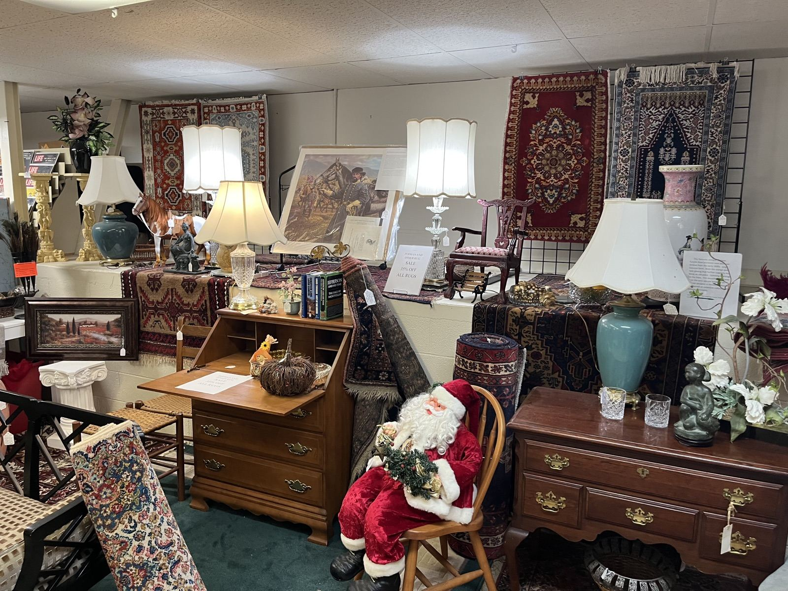
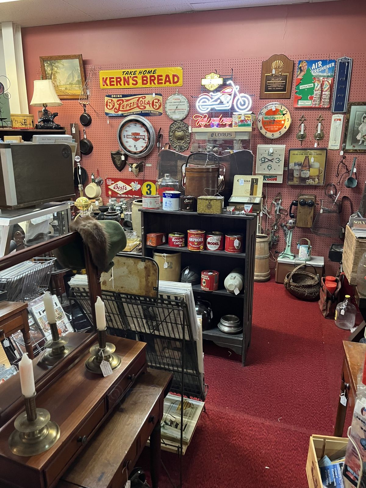
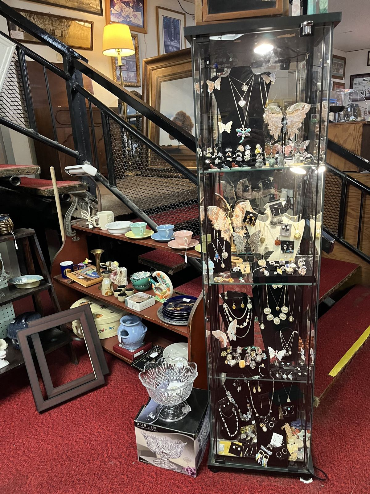
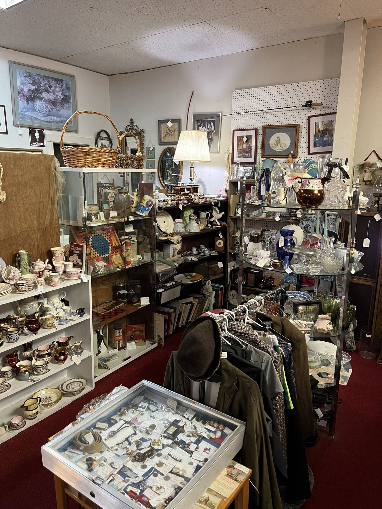
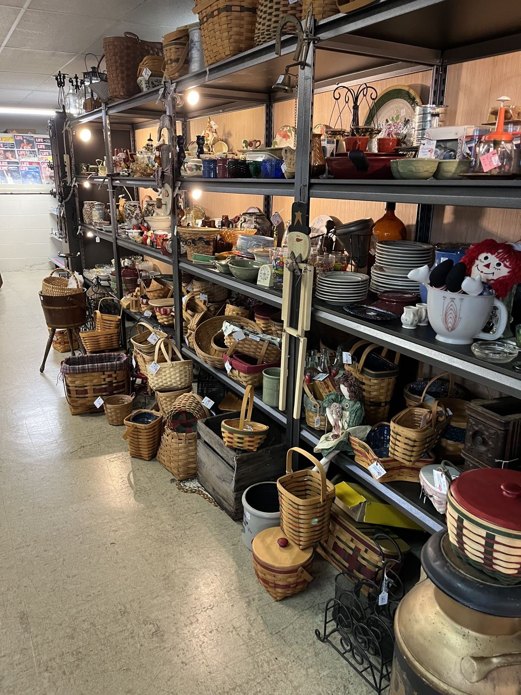
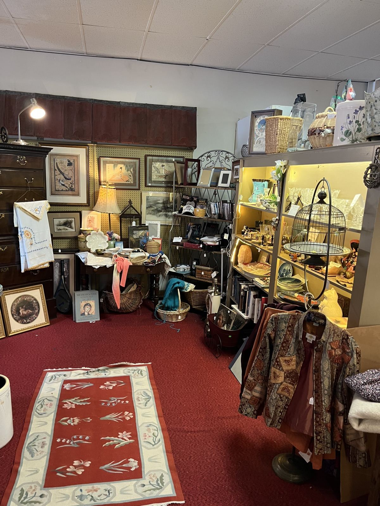
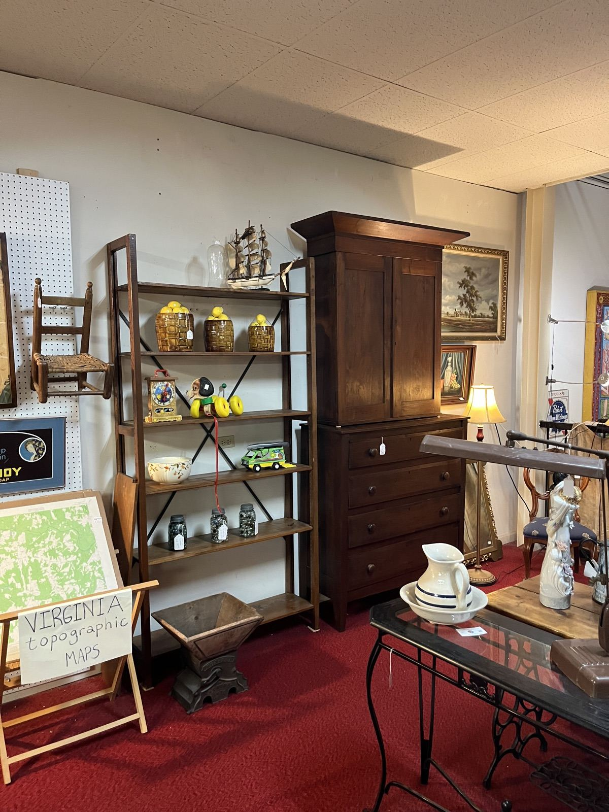
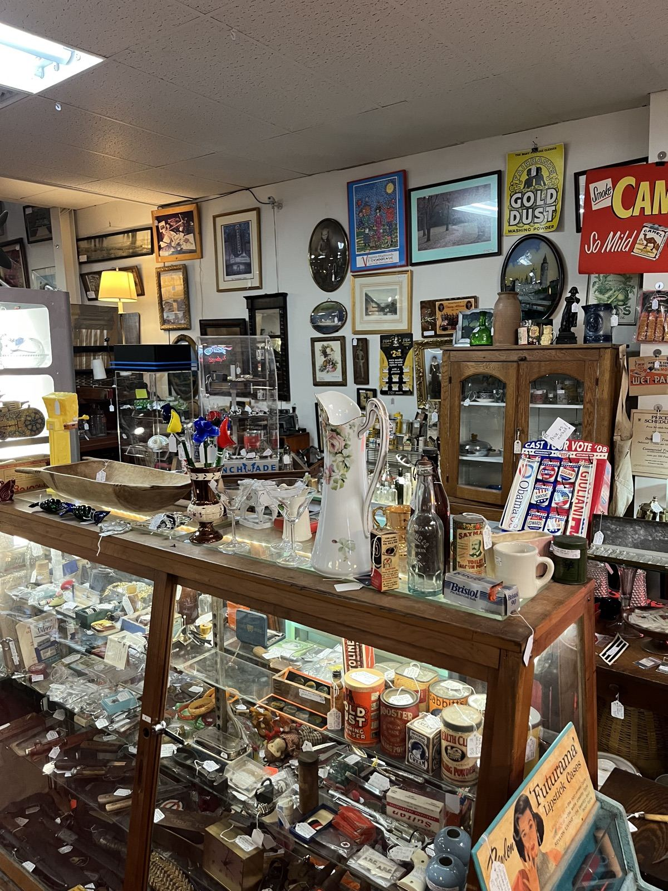
In the news
Zephyr in the paper
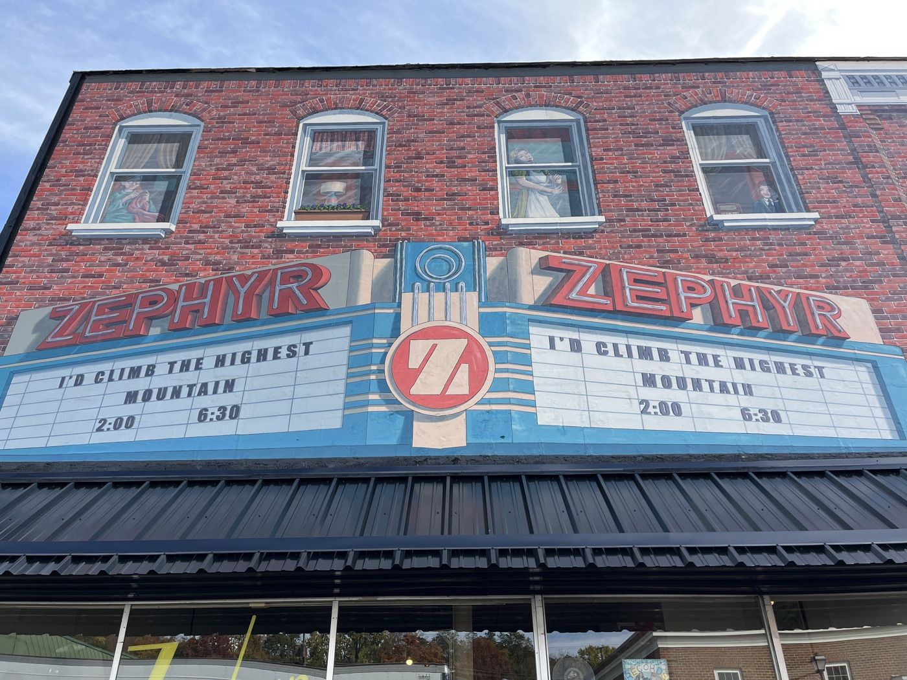
August 2026
Our new mural
In August 2026, artists painted a new mural across the top half of our building, bringing back the look of the old Zephyr Theatre marquee. The Bristol Herald Courier was there to photograph the work in progress.
See it in the Bristol Herald Courier →Our hometown
About Abingdon
Abingdon is the county seat of Washington County, set in the Great Appalachian Valley of Southwest Virginia between the Middle and North Forks of the Holston River. First settled in the 1760s, it has a Main Street lined with galleries, museums and buildings dating back to the late 1700s.
- 1778Incorporated as Abingdon
- 2,087 ftElevation
- 8,376Residents (2020 census)
- Tri-CitiesRegion, alongside Bristol, Kingsport and Johnson City
A short history
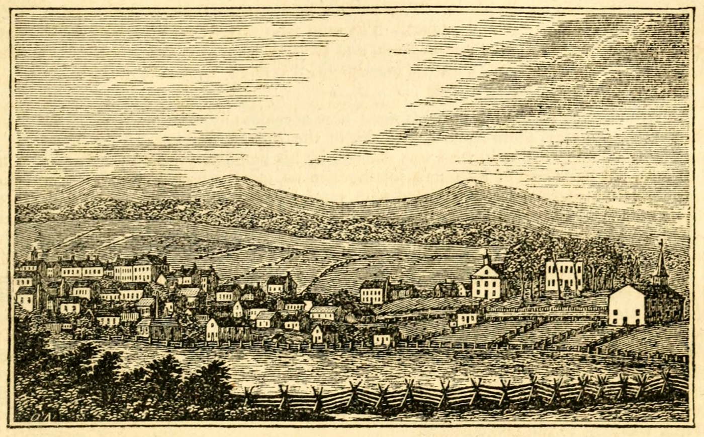
- 1748–50
Thomas Walker of the Loyal Land Company surveys the area, then known as the Wolf Hill Tract. The town still celebrates its wolves; a public art project once placed 27 wolf sculptures around town.
- 1774
Joseph Black builds Black's Fort, a log stockade where early settlers, mostly Scots-Irish, took shelter during Lord Dunmore's War and the Revolution.
- 1776
Black's Fort becomes the seat of the newly formed Washington County.
- 1778
The settlement is incorporated as Abingdon. The origin of the name is debated; one popular story ties it to Abingdon-on-Thames in England.
- 1792
Abingdon gets one of the first post offices west of the Eastern Continental Divide.
- 1832
Gen. Francis Preston's home is built on Main Street. It later housed Martha Washington College and, since 1935, the Martha Washington Inn.
- 1933
The Barter Theatre opens during the Great Depression, letting audiences trade food for tickets.
Things to see and do
Barter Theatre
Named the State Theatre of Virginia in 1946 and now the longest-running professional Equity theatre in the country. A young Gregory Peck performed here in 1940, working in exchange for food.
Visit website →Virginia Creeper Trail
A 34.3-mile rail trail for walkers, cyclists and riders that starts in Abingdon and runs through Damascus up to Whitetop.
Visit website →Abingdon Historic District
Architecture from the late 1700s onward, including the Barter, the Martha Washington Inn and the Abingdon Arts Depot. It's listed on the National Register of Historic Places.
Learn about its history →William King Museum of Art
Housed in the former Abingdon Male Academy, which opened in 1803 with a bequest from salt merchant William King.
Visit website →Virginia Highlands Festival
Started in 1948 by Barter founder Robert Porterfield, now a 16-day celebration of Appalachian arts and crafts.
Visit website →Music & heritage
Abingdon is a stop on The Crooked Road, Virginia's Heritage Music Trail, and home to the Southwest Virginia Cultural Center & Marketplace and the Historical Society of Washington County.
Make a day of it
Browse the shop, grab lunch downtown, ride part of the Creeper Trail or catch an evening show at the Barter. Abingdon is right off Interstate 81, about 133 miles southwest of Roanoke.
Find usCome see us
Our Location
Hours
| Monday – Saturday | 10 AM – 6 PM |
|---|---|
| Sunday | Closed |
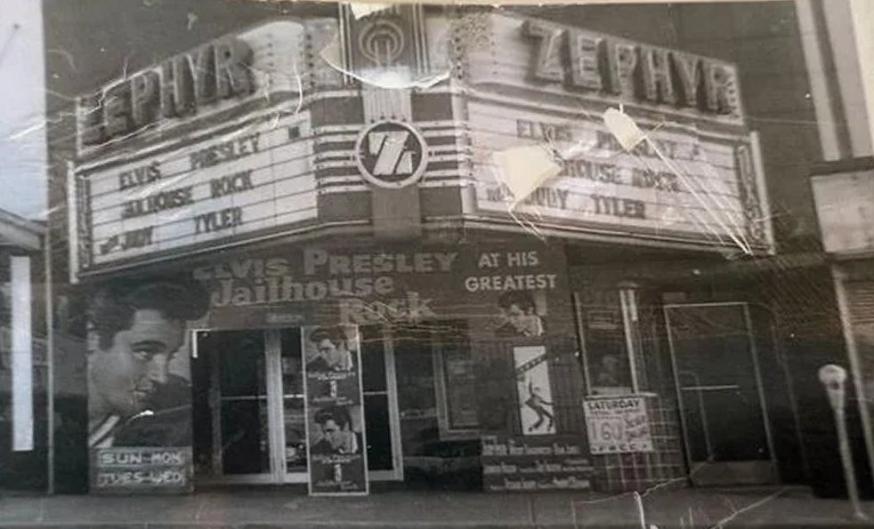